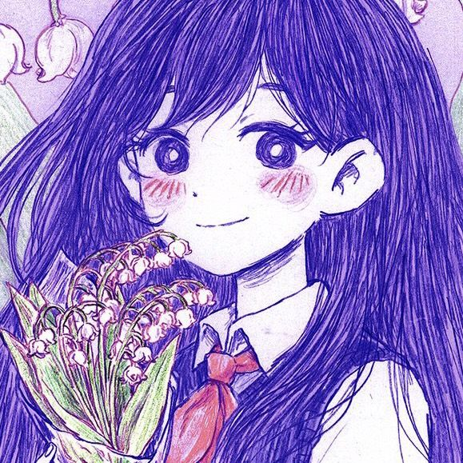

Mari
Mari é conhecida por sua personalidade gentil, carinhosa e atenciosa. Ela gosta de tocar piano, fazer piqueniques e passar tempo com seus amigos. Dentro do grupo, Mari representa uma figura acolhedora e protetora, sendo considerada alguém que mantém todos unidos.